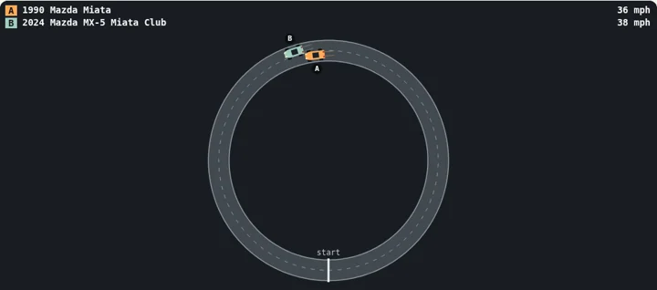
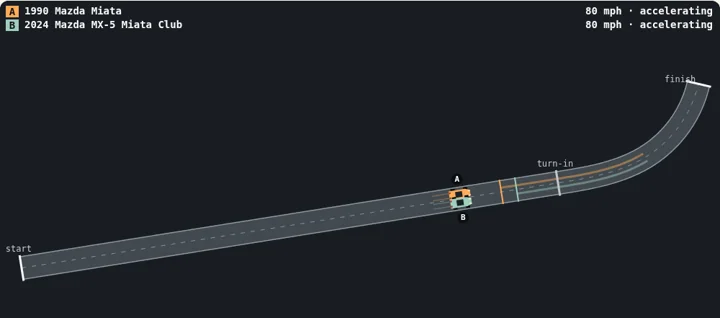

Test
Try a different gear, a lighter setup or a new suspension geometry. See what changes before you buy parts.
Watch it happen
Six model-driven replays. Pick a maneuver, then choose the cars or the change you want to test.
 Launch & accelerateTwo cars launch side by side. Watch where gearing and grip open the gap.
Launch & accelerateTwo cars launch side by side. Watch where gearing and grip open the gap. Brake in a straight lineWatch the same car stop on two tire setups and compare the distances.
Brake in a straight lineWatch the same car stop on two tire setups and compare the distances.
Hold a cornerCompare steady-state cornering speed on a fixed radius.
Brake into a cornerSee how braking and cornering compete for the same grip at entry. Power out of a cornerCompare how the model puts power down as the steering opens.
Power out of a cornerCompare how the model puts power down as the steering opens. Link a series of cornersFollow a prescribed line through a hairpin, sweeper or S-curve.
Link a series of cornersFollow a prescribed line through a hairpin, sweeper or S-curve.